Streetwear é um projeto editorial sobre cultura urbana, moda e identidade visual. A revista explora a ligação entre roupa, música, atitude e expressão pessoal, criando uma narrativa gráfica marcada por contraste, ritmo e impacto.
A direção visual combina composições fortes, tipografia expressiva e imagens de grande presença, procurando transmitir a energia da rua e o movimento constante das culturas contemporâneas.
A identidade visual foi construída a partir de uma paleta quente e urbana, com destaque para o laranja, preto e branco. O resultado é uma revista com uma linguagem editorial dinâmica, visualmente intensa e próxima do universo streetwear.
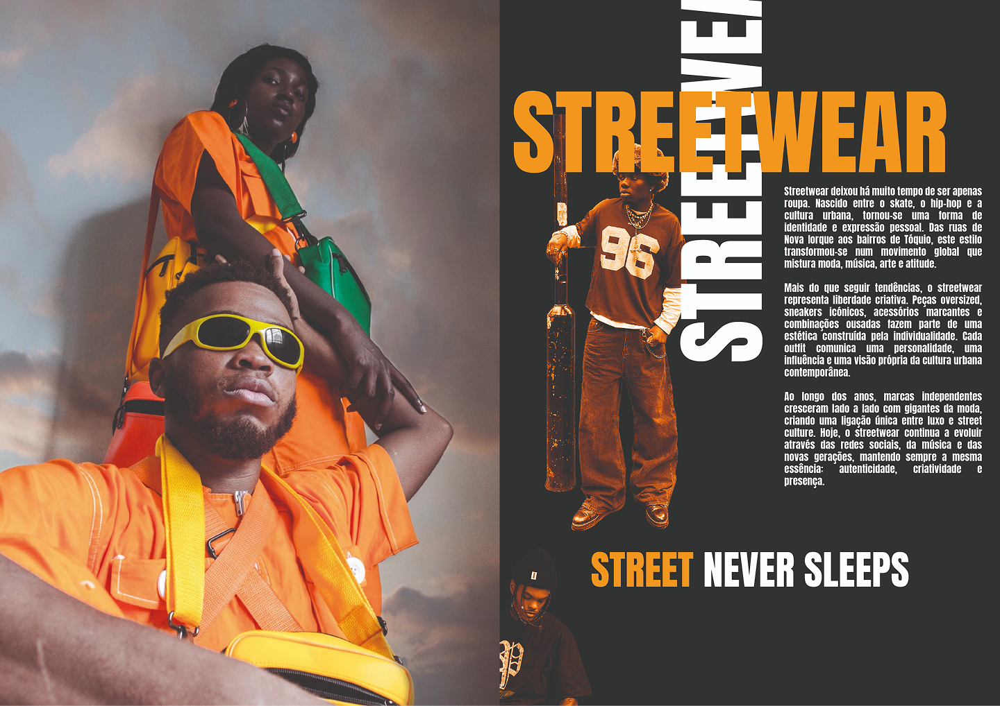
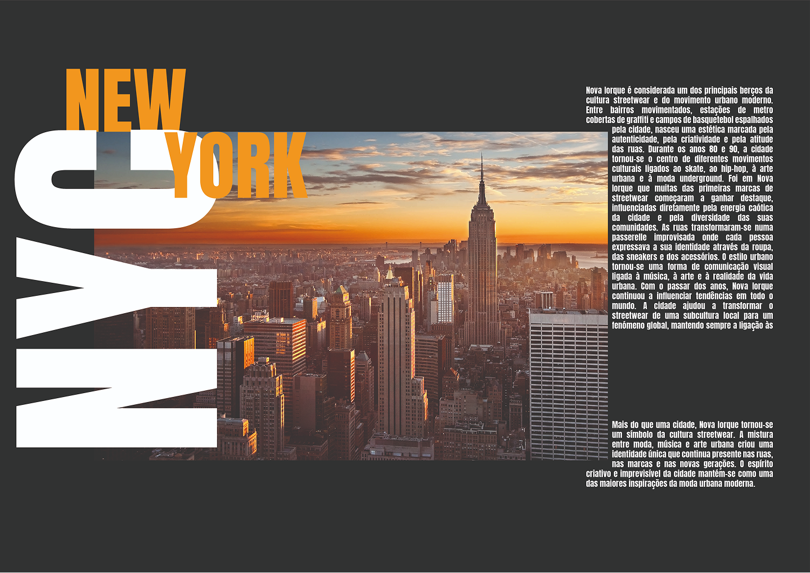
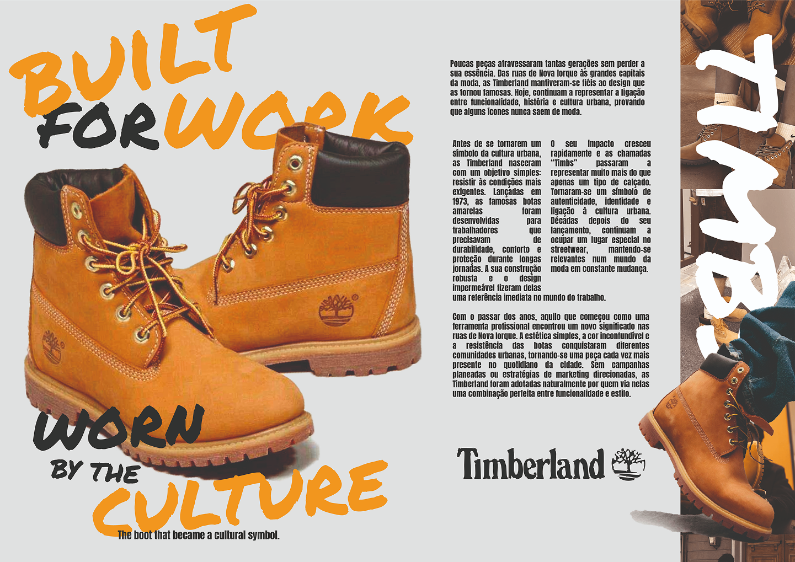

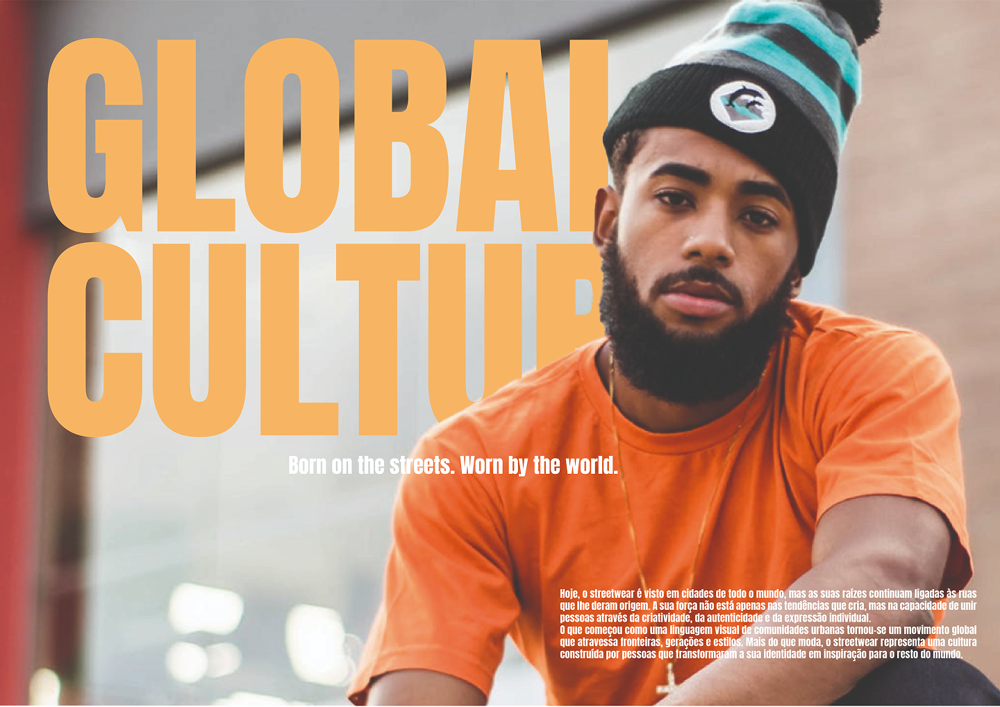
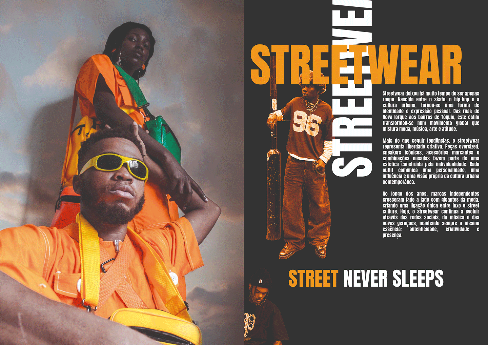
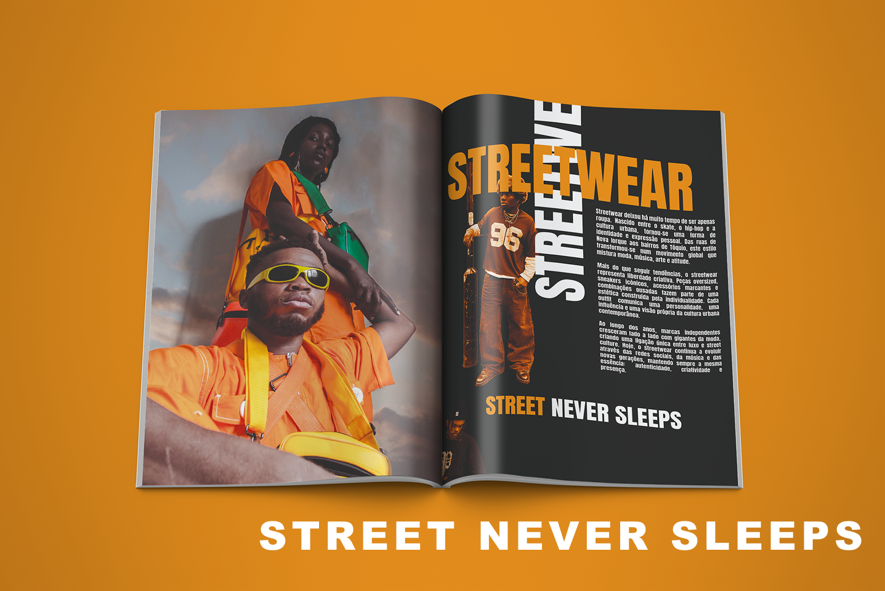
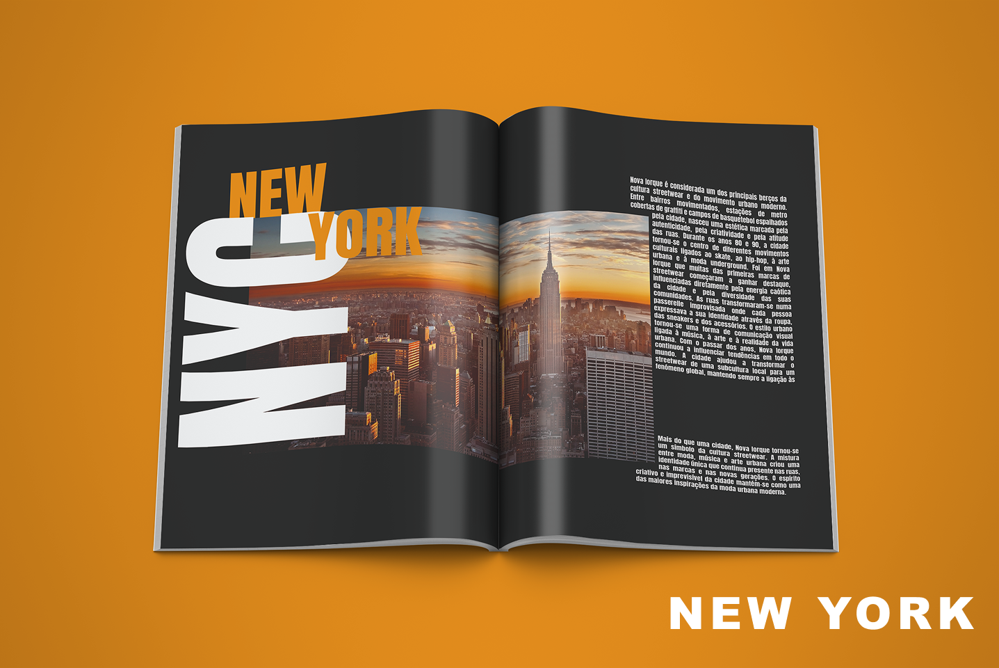
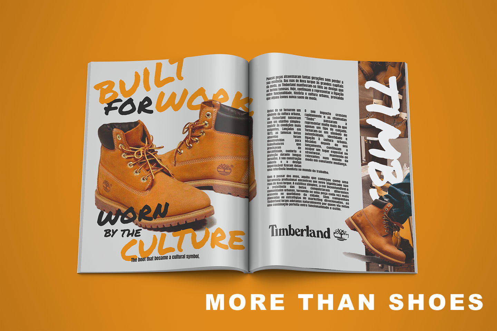
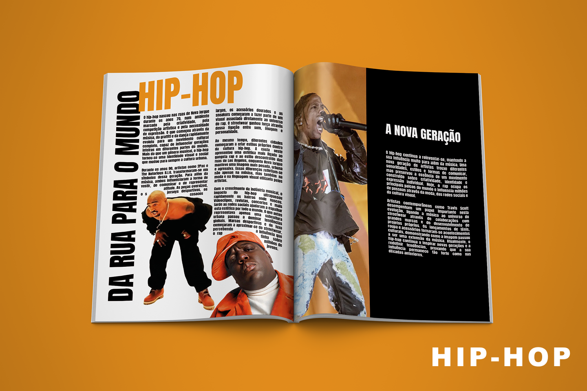
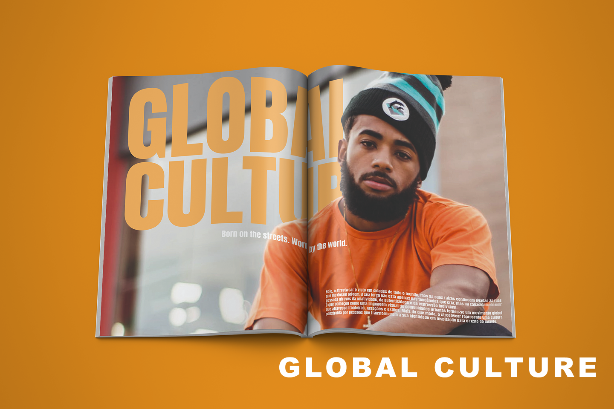
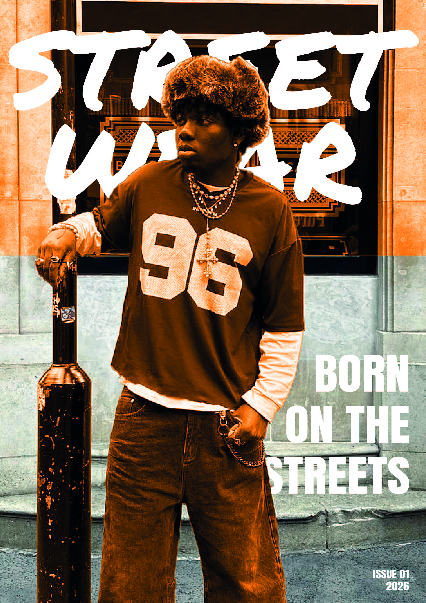
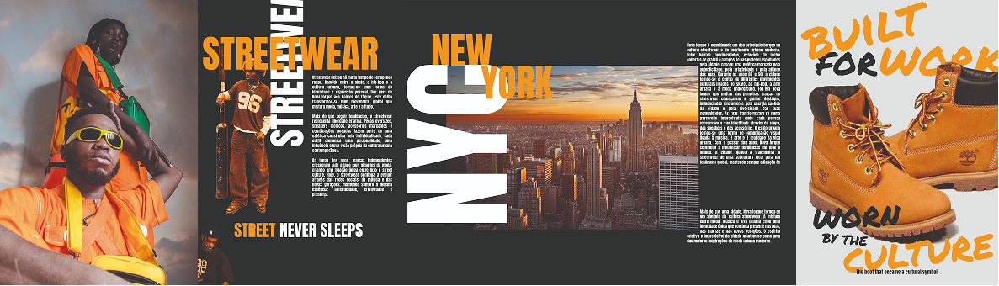
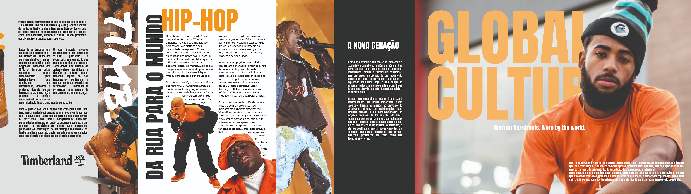
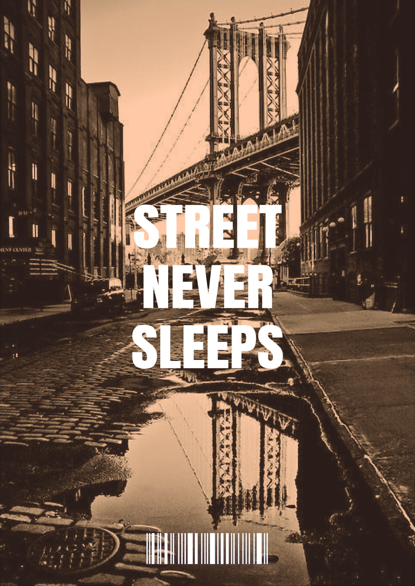